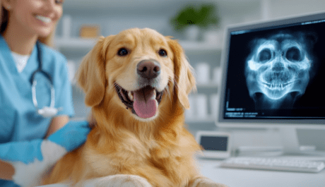
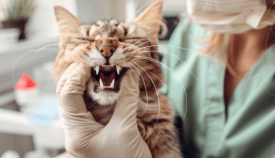

Услуги
О процедуре
Галерея
Частые вопросы
Круглосуточно
г. Дзержинск, ул. Гагарина 16, к 1
+7 (920) 028-22-48
основной сайт
Услуги
О процедуре
Галерея
Частые вопросы
основной сайт
Профилактический осмотр у стоматолога
1 000 ₽
записаться
Другие услуги

Рентгеновские снимки
позволяют диагностировать открытые проблемы с зубами и костями челюстей
Удаление зубов
удаление поврежденных или инфицированных зубов
Лечение пародонтита
лечение заболеваний десен, которые могут привести к потере зубов
Консультации по уходу за зубами
советы по регулярной чистке зубов, диете и лечению

Гигиеническая чистка зубов
удаление зубного камня, налета и повреждений, которые могут привести к заболеванию десен